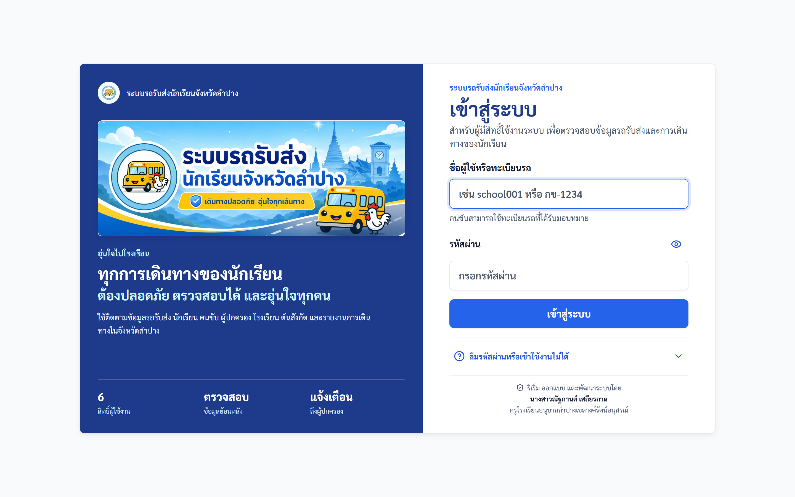
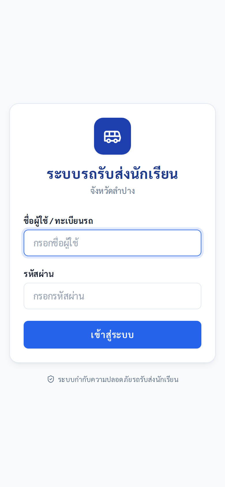
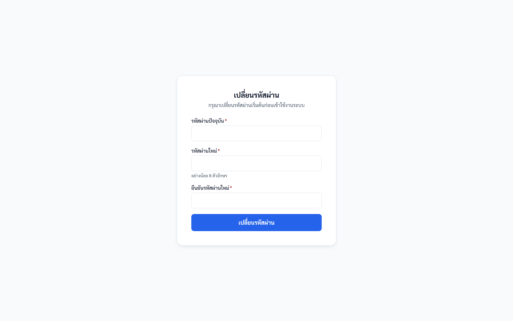
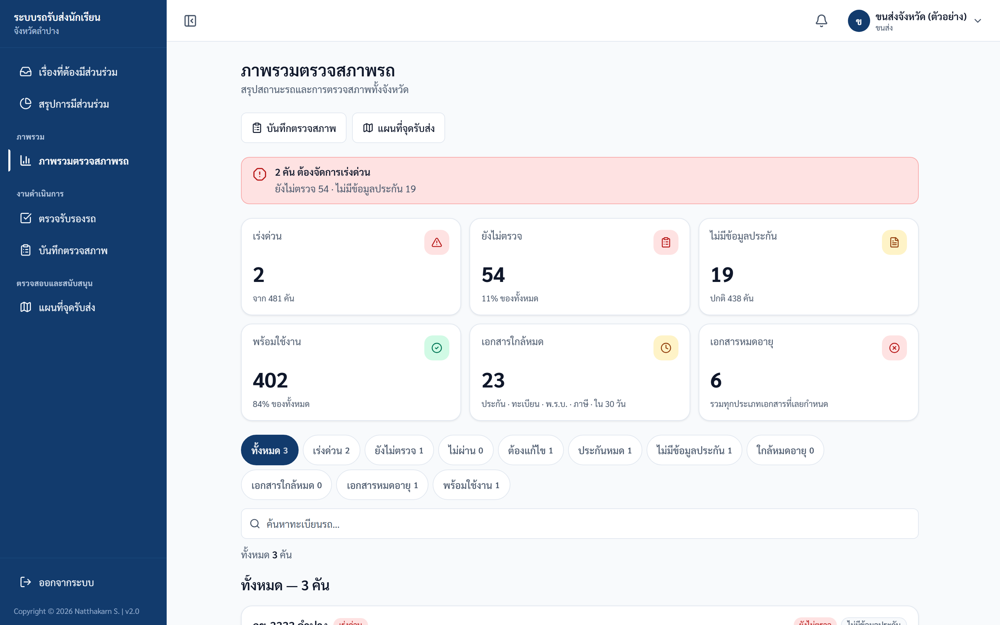
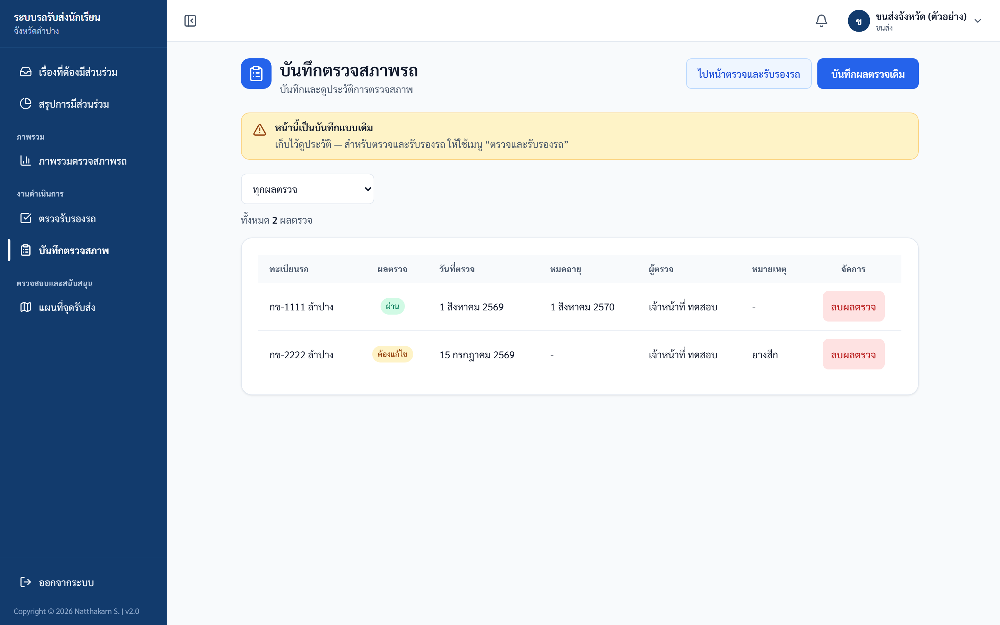
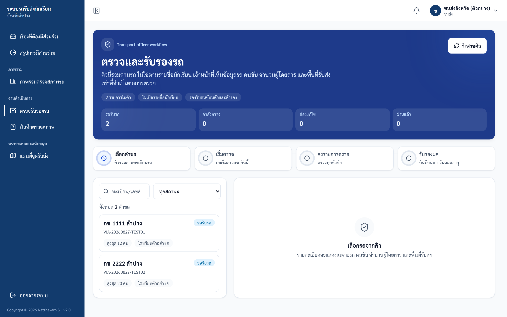
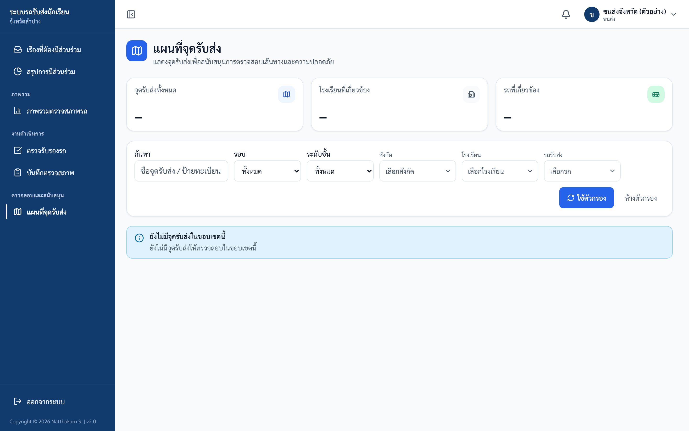
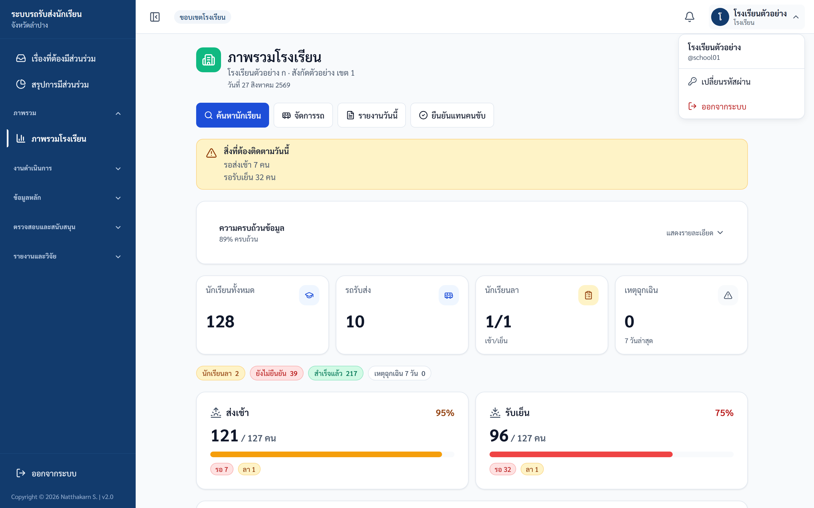

คู่มือปฏิบัติงาน — เจ้าหน้าที่ขนส่ง
ระบบรถรับส่งนักเรียนจังหวัดลำปาง — https://schoolbuslampang.com เวอร์ชัน Phase 10.13C • อัปเดต 2026-06-24
📷 หมายเหตุภาพหน้าจอ: ข้อมูลส่วนบุคคล (ชื่อ/เบอร์) ในภาพถูกเบลอเพื่อความเป็นส่วนตัว — เมื่อใช้งานจริงจะแสดงข้อมูลตามปกติ
ภาพรวม 30 วินาที
- บทบาทนี้ทำอะไรได้:
- ดูภาพรวมตรวจสภาพรถทั้งจังหวัด (รถเสี่ยง / ยังไม่ตรวจ / ประกัน-เอกสารใกล้หมด)
- บันทึกผลตรวจสภาพรถ (ผลสรุปครั้งเดียว: ผ่าน/ไม่ผ่าน/ต้องแก้ไข/รอตรวจ)
- ทำงานในคิวตรวจรับรองรถแบบใหม่ — ลง checklist + รับรองใบอนุญาตคนขับ (หลัก/สำรอง)
- ดูแผนที่จุดรับส่ง (ข้อมูลรวม ไม่มีรายชื่อนักเรียน) และรายการรถทั้งหมด (อ่านอย่างเดียว)
- เปลี่ยนรหัสผ่านของตัวเอง
- เข้าระบบด้วย: ชื่อผู้ใช้ของเจ้าหน้าที่ขนส่ง (ไม่ใช่ทะเบียนรถ — ทะเบียนรถใช้เฉพาะคนขับ) admin เป็นผู้สร้างให้
- อุปกรณ์ที่แนะนำ: คอมพิวเตอร์ / แท็บเล็ต เป็นหลัก (ฟอร์มและตารางเยอะ) มือถือใช้ได้ผ่านเมนูลิ้นชัก (ปุ่มขีดสามขีด) แต่บทบาทนี้ไม่มีแถบเมนูล่างบนมือถือ
- บัญชีนี้ดูข้อมูลรถได้ทั้งจังหวัด ไม่ผูกกับโรงเรียน/เขตใด และ ไม่เห็นรายชื่อ/รหัส/ผู้ปกครองนักเรียน ตามนโยบาย PDPA (เห็นได้แค่ตัวเลขจำนวนผู้โดยสารแบบรวม)
สารบัญงาน
| # | งาน | ใช้เมื่อ |
|---|---|---|
| 1 | เข้าสู่ระบบ | ทุกครั้งที่เริ่มใช้งาน |
| 2 | เปลี่ยนรหัสผ่านครั้งแรก (บังคับ) | ครั้งแรกที่ใช้รหัสตั้งต้น |
| 3 | ดูภาพรวมตรวจสภาพรถ (หน้าหลัก) | เริ่มงานประจำวัน จับรถที่ต้องตรวจ |
| 4 | บันทึกผลตรวจสภาพรถ (ฟอร์มเดิม) | บันทึกผลตรวจแบบผลสรุปครั้งเดียว |
| 5 | ตรวจรับรองรถ (คิว checklist แบบใหม่) | รับรองรถ-คนขับจากคำขอของโรงเรียน |
| 6 | ดูแผนที่จุดรับส่ง | ตรวจสอบเส้นทาง/จุดรับส่งแบบรวม |
| 7 | ดูรายการรถทั้งหมด | ดูสถานะรถทั้งจังหวัดแบบอ่านอย่างเดียว |
| 8 | รายงาน/ส่งออก | (บทบาทนี้ไม่มีสิทธิ์ — ดูในงาน) |
| 9 | ออกจากระบบ | เลิกใช้งาน |
งานที่ 1 — เข้าสู่ระบบ
ใช้เมื่อ: เริ่มใช้งานระบบทุกครั้ง
ขั้นตอน:
- เปิดเบราว์เซอร์ไปที่ https://schoolbuslampang.com
- กรอก ชื่อผู้ใช้ของเจ้าหน้าที่ขนส่ง ที่ช่อง "ชื่อผู้ใช้ / ทะเบียนรถ" (ไม่ใช่ทะเบียนรถ)
- กรอก รหัสผ่าน
- กด เข้าสู่ระบบ

ภาพ: หน้าเข้าสู่ระบบ (เดสก์ท็อป)

ภาพ: หน้าเข้าสู่ระบบ (มือถือ)
รหัสผ่านตั้งต้น:
- บัญชีที่ admin สร้างให้ผ่าน "จัดการผู้ใช้งาน" → admin กำหนดรหัสเริ่มต้นและแจ้งให้ทราบ
- บัญชีที่นำเข้าจากระบบเดิม (migrate) ถ้าไม่ได้ระบุรหัส → รหัสตั้งต้นคือ
1234 - รหัสตั้งต้นใช้ได้ครั้งแรกเท่านั้น จากนั้นถูกบังคับให้เปลี่ยน (ดูงานที่ 2)
✅ ผลลัพธ์ที่ถูกต้อง: เข้าหน้าภาพรวมตรวจสภาพรถได้ (หรือถูกพาไปเปลี่ยนรหัสถ้ายังใช้รหัสตั้งต้น)
⚠️ ถ้าติดปัญหา:
- "ชื่อผู้ใช้หรือรหัสผ่านไม่ถูกต้อง" → ชื่อผู้ใช้หรือรหัสผ่านผิด
- "บัญชีนี้ถูกปิดการใช้งาน / กรุณาติดต่อผู้ดูแลระบบ" → บัญชีถูกระงับ ติดต่อ admin
- "มีการพยายามเข้าสู่ระบบหลายครั้งจากเครือข่ายนี้…" → พยายามถี่เกินไป รอประมาณ 15 นาที
- "ไม่สามารถเชื่อมต่อระบบได้" → อินเทอร์เน็ต/เซิร์ฟเวอร์มีปัญหา
- ไม่ทราบชื่อผู้ใช้ → ติดต่อ admin
- ลืมรหัสผ่าน: ไม่มีปุ่ม "ลืมรหัสผ่าน" และตั้งรหัสใหม่เองไม่ได้ → ติดต่อ admin ให้รีเซ็ต จากนั้นต้องเปลี่ยนรหัสใหม่อีกครั้งตอนเข้าสู่ระบบ
งานที่ 2 — เปลี่ยนรหัสผ่านครั้งแรก (บังคับ)
ใช้เมื่อ: เข้าสู่ระบบครั้งแรกด้วยรหัสตั้งต้น ระบบขึ้น "กรุณาเปลี่ยนรหัสผ่านเริ่มต้น"
ขั้นตอน:
- ระบบพาไปหน้า เปลี่ยนรหัสผ่าน อัตโนมัติ (ใช้เมนูอื่นไม่ได้จนกว่าจะเปลี่ยนสำเร็จ)
- ตั้ง รหัสผ่านใหม่
- กรอก ยืนยันรหัสผ่าน ให้ตรงกัน
- บันทึก → เปลี่ยนรหัสผ่านสำเร็จ

ภาพ: หน้าเปลี่ยนรหัสผ่าน (บังคับเปลี่ยนครั้งแรก)
✅ ผลลัพธ์ที่ถูกต้อง: เปลี่ยนรหัสสำเร็จ และใช้งานเมนูอื่นได้ตามปกติ
⚠️ ถ้าติดปัญหา:
- หลังเปลี่ยนรหัส อาจขึ้น "เซสชันหมดอายุจากการเปลี่ยนรหัสผ่าน กรุณาเข้าสู่ระบบใหม่" → เข้าสู่ระบบใหม่ด้วยรหัสใหม่ (token เก่าใช้ไม่ได้แล้ว)
- เปิดหน้าภาพรวม/หน้าตรวจรถแล้วถูกเด้งกลับ → ยังเปลี่ยนรหัสไม่สำเร็จ ทำให้เสร็จก่อน (ระบบยอมให้เฉพาะหน้าเปลี่ยนรหัสและออกจากระบบ)
งานที่ 3 — ดูภาพรวมตรวจสภาพรถ (หน้าหลัก)
ใช้เมื่อ: เริ่มงานประจำวัน เพื่อจับรถที่ต้องตรวจ/ต้องจัดการเร่งด่วน (เมนู "ภาพรวมตรวจสภาพรถ")
สิ่งที่เห็นบนหน้าจอ:
- ปุ่มลัด 2 ปุ่ม ใต้หัวข้อ: "บันทึกตรวจสภาพ" และ "แผนที่จุดรับส่ง"
- แบนเนอร์สรุป (Hero) เปลี่ยนสีตามความเสี่ยง: แดง = "X คัน ต้องจัดการเร่งด่วน" / น้ำเงิน = "ยังไม่มีรถในระบบ" / เขียว = "รถทุกคันพร้อมใช้งาน"
- การ์ด KPI 6 ใบ: เร่งด่วน / ยังไม่ตรวจ / ไม่มีข้อมูลประกัน / พร้อมใช้งาน / เอกสารใกล้หมด (กดได้ → กรอง) / เอกสารหมดอายุ (กดได้ → กรอง)
- ปุ่มกรองด่วน 11 ปุ่ม (มีตัวเลขนับแต่ละปุ่ม): ทั้งหมด / เร่งด่วน / ยังไม่ตรวจ / ไม่ผ่าน / ต้องแก้ไข / ประกันหมด / ไม่มีข้อมูลประกัน / ใกล้หมดอายุ / เอกสารใกล้หมด / เอกสารหมดอายุ / พร้อมใช้งาน
- ช่องค้นหาทะเบียนรถ
- รายการรถเรียงตามความเสี่ยง (สูงสุด 20 คัน): ทะเบียน, ป้ายความสำคัญ, ชื่อคนขับ, ป้ายสถานะ, วันตรวจ/วันประกัน, ป้าย SLA (เหลือ X วัน / เกิน SLA X วัน — SLA ตั้งไว้ 7 วัน), คำแนะนำ, ปุ่ม "บันทึกตรวจ" และ "โทรคนขับ"
- กราฟ 2 ใบ: วงกลม (donut) "ผลตรวจสภาพรถ" และแท่ง (bar) "สถานะประกันภัย"

ภาพ: ภาพรวมการตรวจสภาพรถ
ขั้นตอน:
- เปิดเมนู "ภาพรวมตรวจสภาพรถ"
- ดูแบนเนอร์และการ์ด KPI เพื่อจับรถที่เสี่ยง/ต้องตรวจ
- กดปุ่มกรองด่วน หรือพิมพ์ค้นหาทะเบียนรถ เพื่อกรองรายการ
- ที่แถวรถที่ต้องการ กด "บันทึกตรวจ" เพื่อไปฟอร์มบันทึกผลตรวจ (ระบบเลือกรถคันนั้นให้อัตโนมัติ) หรือกด "โทรคนขับ" (ถ้ามีเบอร์)
✅ ผลลัพธ์ที่ถูกต้อง: เห็นรายการรถเรียงตามความเสี่ยง และกดไปบันทึกผลตรวจรถที่ต้องการได้
หมายเหตุสำคัญ:
- "เอกสาร" หมายรวม 4 อย่าง: ประกัน · ทะเบียน · พ.ร.บ. · ภาษี — "เอกสารใกล้หมด/หมดอายุ" คิดในกรอบ 30 วัน
- การ์ด "พร้อมใช้งาน" บน KPI นับเฉพาะรถที่ผลตรวจล่าสุดเป็น "ผ่าน" ส่วนป้ายความเสี่ยงในรายการใช้เกณฑ์รวม (ผลตรวจ + ประกัน) จึงอาจเป็นคนละตัวเลข ไม่ใช่ข้อผิดพลาด
- dashboard นับเฉพาะรถที่ยังไม่ถูกลบ และ ไม่แสดงข้อมูลนักเรียนใด ๆ (ตัด roster ออกตาม PDPA)
- 💡 เมื่อบันทึกผลตรวจเสร็จแล้วกลับมาหน้านี้ ระบบจะเลื่อนไปไฮไลต์รถคันนั้น พร้อมแถบเขียว "บันทึกผลตรวจของรถ X เรียบร้อยแล้ว"
งานที่ 4 — บันทึกผลตรวจสภาพรถ (ฟอร์มเดิม)
ใช้เมื่อ: บันทึกผลตรวจแบบ "ผลสรุปครั้งเดียว" (ระบบเดิม ไม่ใช่ checklist) และดูประวัติการตรวจ (เมนู "บันทึกตรวจสภาพ")
ปุ่มมุมขวาบน:
- "ไปคิวรับรองแบบใหม่" → ไปหน้าคิวตรวจรับรอง (งานที่ 5)
- "บันทึกผลตรวจเดิม" → เปิดฟอร์ม (เปิดแล้วปุ่มเปลี่ยนเป็น "ปิดฟอร์ม")
ฟิลด์ในฟอร์ม (ช่องมี * = บังคับ):
- เลือกรถ * — ค้นหาทะเบียนได้; มีตัวเลือก "อื่นๆ (เพิ่มทะเบียนรถใหม่)" → กรอกแบบมีโครงสร้าง (เลขนำหน้า / หมวดอักษร / หมายเลข / จังหวัด)
- ผลตรวจ * — ผ่าน / ไม่ผ่าน / ต้องแก้ไข / รอตรวจ
- วันที่ตรวจ * — ค่าเริ่มต้นเป็นวันนี้ (รูปแบบ ปี-เดือน-วัน)
- วันหมดอายุผลตรวจ (ไม่บังคับ)
- โรงเรียนที่ออกใบรับรอง — ค้นหาได้; มี "อื่นๆ (ระบุเอง)"
- หมายเหตุ
ส่วนล่างคือ ประวัติการตรวจ (กรองตามผลตรวจได้) แสดงเป็นตาราง (จอใหญ่) หรือการ์ด (มือถือ): ทะเบียน, ผลตรวจ, วันที่ตรวจ, วันหมดอายุ, ผู้ตรวจ, หมายเหตุ — หน้าละ 20 รายการ

ภาพ: บันทึกตรวจสภาพ
ขั้นตอน:
- เปิดเมนู "บันทึกตรวจสภาพ" แล้วกด "บันทึกผลตรวจเดิม" เพื่อเปิดฟอร์ม (ถ้าเข้ามาจากปุ่ม "บันทึกตรวจ" ในหน้าภาพรวม ฟอร์มจะเปิดให้อัตโนมัติ พร้อมแถบ "กำลังบันทึกผลตรวจสำหรับรถ: <ทะเบียน>")
- เลือก รถ, เลือก ผลตรวจ, ตรวจสอบ วันที่ตรวจ
- (ถ้าผลเป็น "ผ่าน") ใส่ วันหมดอายุผลตรวจ ด้วย — ไม่บังคับ แต่ถ้าไม่ใส่ รถจะยังไม่ถูกนับว่า "พร้อมใช้งาน"
- กด "บันทึกผลตรวจ" → ระบบแจ้ง "บันทึกผลตรวจสำเร็จ" (ถ้ามาจากหน้าภาพรวม ระบบจะพากลับไปไฮไลต์รถคันนั้น)
✅ ผลลัพธ์ที่ถูกต้อง: ขึ้น "บันทึกผลตรวจสำเร็จ" และผลปรากฏในประวัติการตรวจ
⚠️ ถ้าติดปัญหา:
- ฟอร์มเดิมบังคับเฉพาะ รถ, วันที่ตรวจ, ผลตรวจ (วันหมดอายุไม่บังคับแม้ผลเป็น "ผ่าน") — วันที่ต้องเป็นรูปแบบ ปี-เดือน-วัน
- เพิ่มรถใหม่แล้วขึ้น "รถ X มีในระบบแล้ว — ใช้ข้อมูลเดิม" → เป็นพฤติกรรมตั้งใจ ระบบจับทะเบียนซ้ำแม้เขียนเว้นวรรค/ขีด/ชื่อจังหวัดต่างกัน แล้วใช้รถเดิมให้บันทึกต่อได้
- กรอกทะเบียนใหม่ไม่ผ่าน → หมวดอักษรต้องเป็นอักษรไทย 2 ตัว, หมายเลข 1-4 หลัก, เลขนำหน้าเป็นตัวเลขตัวเดียว และต้องเลือกจังหวัด
- ประวัติการตรวจเป็น อ่านอย่างเดียว หน้านี้ไม่มีปุ่มแก้ไขในตัว (แก้ไขผลตรวจได้เฉพาะของตัวเอง — ดูตารางขอบเขตสิทธิ์)
งานที่ 5 — ตรวจรับรองรถ (คิว checklist แบบใหม่)
ใช้เมื่อ: รับรองรถรับส่งร่วม (shared-vehicle) จากคำขอที่โรงเรียนเปิดเข้ามา — ลง checklist รับรองรถ + รับรองใบอนุญาตคนขับ (เมนู "ตรวจรับรองรถ")
หัวข้อ "คิวตรวจและรับรองรถ" มีปุ่ม "รีเฟรชคิว" และแถบขั้นตอน 4 ขั้น: เลือกคำขอ → ตรวจข้อมูลรถ → ลง checklist → รับรองผล
หน้าจอแบ่งเป็น 3 ส่วน:
(1) คิวด้านซ้าย — ช่องค้นหา (ทะเบียน / เลขคำขอ / โรงเรียน) + ตัวกรองสถานะ + ตัวเลขสรุป (รอรับรถ / กำลังตรวจ / ต้องแก้ไข / ผ่านแล้ว); แต่ละการ์ดแสดง ทะเบียน, เลขคำขอ, สถานะ, "สูงสุด X คน", ชื่อโรงเรียนผู้ออกเอกสาร. สถานะภาษาไทย: ฉบับร่าง / รอรับรถ / ยื่นแล้ว / กำลังตรวจ / ต้องแก้ไข / ผ่าน / ไม่ผ่าน / ยกเลิก
(2) รายละเอียดรถ + จัดการคนขับ (เปิดเมื่อเลือกคำขอ) — แสดง ทะเบียน, ประเภทรถ, ความจุที่รับรอง, ผู้โดยสารสูงสุด, โรงเรียนและจำนวนผู้โดยสาร (เช้า/เย็น) แยกตามโรงเรียน, คนขับที่ได้รับอนุญาต (หลัก/สำรอง) และ พื้นที่รับส่ง
- ปุ่ม "เริ่มการตรวจครั้งใหม่" (กดได้เมื่อสถานะเป็น รอรับรถ / ยื่นแล้ว / ต้องแก้ไข / กำลังตรวจ)
- กล่อง "จัดการคนขับหลักและคนขับสำรอง" มี 2 ฟอร์ม:
- "เพิ่มสิทธิ์ขับรถคันนี้" — เลือกคนขับ + บทบาท (คนขับหลัก/คนขับสำรอง) + วันสิ้นสุดสิทธิ์ → ปุ่ม "เพิ่มเข้ากลุ่มรถ"
- "รับรองใบอนุญาตคนขับ" — เลือกคนขับ + เลขใบอนุญาต + ประเภท (เช่น ท.2) + วันหมดอายุใบอนุญาต + เลขอ้างอิงขนส่ง → ปุ่ม "บันทึกรับรองคนขับ"
(3) แบบตรวจ (checklist) (แสดงหลังกด "เริ่มการตรวจครั้งใหม่") — หัวข้อ "แบบตรวจ <ชื่อ> รุ่น

ภาพ: ตรวจรับรองรถ (คิวใบส่งตรวจ)
ขั้นตอน:
- เลือกคำขอจากคิวด้านซ้าย
- ตรวจรายละเอียดรถและคนขับ — ถ้าจำเป็น เพิ่มสิทธิ์คนขับ และ/หรือ รับรองใบอนุญาตคนขับ
- กด "เริ่มการตรวจครั้งใหม่"
- ลงผลให้ครบทุกหัวข้อใน checklist (หัวข้อที่ไม่ผ่าน ต้องระบุรายละเอียด)
- เลือกผลรวม และใส่วันหมดอายุ → กด "ยืนยันและลงผลรับรอง"
✅ ผลลัพธ์ที่ถูกต้อง: ลงผลรับรองสำเร็จ และระบบคำนวณความพร้อมใช้งานของรถ (eligibility) ใหม่ ซึ่งมีผลต่อการที่คนขับจะเริ่มรอบได้หรือไม่
⚠️ ถ้าติดปัญหา:
- คำขอ (application) ถูกสร้างโดยโรงเรียน ไม่ใช่ขนส่ง — ขนส่งทำได้แค่ตรวจ/รับรองคำขอที่โรงเรียนเปิดเข้ามา ถ้าไม่เห็นคำขอ/คำขอผิด ติดต่อโรงเรียน
- กด "เริ่มการตรวจครั้งใหม่" ไม่ได้ → คำขอต้องเป็นสถานะ รอรับรถ / ยื่นแล้ว / ต้องแก้ไข / กำลังตรวจ (ฉบับร่าง/ยกเลิก/ผ่านแล้ว เริ่มไม่ได้)
- เพื่อนเริ่มตรวจไว้ แต่เราสรุปผลไม่ได้ → เฉพาะเจ้าหน้าที่ผู้เริ่มตรวจเท่านั้นที่สรุปผล (finalize) ได้
- จะรับรองผลรวม "ผ่าน" แต่มีหัวข้อ "ไม่ผ่าน" → ระบบปฏิเสธ "ไม่สามารถรับรองว่าผ่านเมื่อมีหัวข้อตรวจไม่ผ่าน" ให้เปลี่ยนผลรวมเป็น "ต้องแก้ไข" หรือ "ไม่ผ่าน"
- ผลรวม "ผ่าน" บันทึกไม่ได้ → ผลรวม "ผ่าน" ต้องระบุ วันหมดอายุ เสมอ
- ปุ่ม "ยืนยันและลงผลรับรอง" เป็นสีจาง → ต้องลงผลครบทุกหัวข้อก่อน และหัวข้อ "ไม่ผ่าน" ต้องกรอกรายละเอียด
งานที่ 6 — ดูแผนที่จุดรับส่ง
ใช้เมื่อ: ตรวจสอบเส้นทาง/จุดรับส่งแบบรวม เพื่อสนับสนุนความปลอดภัย (เมนู "แผนที่จุดรับส่ง") — เป็นข้อมูล รวม (aggregate) ไม่มีรายชื่อ/เบอร์/ที่อยู่นักเรียน
สิ่งที่เห็นบนหน้าจอ:
- การ์ดตัวเลข 3 ใบ: "จุดรับส่งทั้งหมด" / "โรงเรียนที่เกี่ยวข้อง" / "รถที่เกี่ยวข้อง"
- ตัวกรอง: ค้นหา / รอบ (เช้า/เย็น/ทั้งคู่) / ระดับชั้น / สังกัด / โรงเรียน / รถ
- ปุ่ม "ใช้ตัวกรอง" และ "ล้างตัวกรอง"

ภาพ: แผนที่จุดรับ-ส่ง
ขั้นตอน:
- เปิดเมนู "แผนที่จุดรับส่ง"
- เลือกตัวกรองที่ต้องการ
- กด "ใช้ตัวกรอง"
- คลิกหมุด (pin) บนแผนที่เพื่อดูรายละเอียดจุด
✅ ผลลัพธ์ที่ถูกต้อง: เห็นจุดรับส่งบนแผนที่แบบรวม (ไม่มีจำนวนนักเรียนรายจุด/รายชื่อ ตาม PDPA)
⚠️ ถ้าติดปัญหา: ขึ้น "ไม่มีสิทธิ์เข้าถึงข้อมูลนี้" → บัญชีไม่มีสิทธิ์เข้าถึงข้อมูลนี้
งานที่ 7 — ดูรายการรถทั้งหมด
ใช้เมื่อ: ดูสถานะรถทั้งจังหวัดแบบ อ่านอย่างเดียว (หน้า /transport/vehicles — ไม่มีลิงก์ในเมนูซ้าย)
ℹ️ เมนูซ้ายมีแค่ 4 รายการ (ภาพรวมตรวจสภาพรถ / แผนที่จุดรับส่ง / ตรวจรับรองรถ / บันทึกตรวจสภาพ) หน้ารายการรถทั้งหมดต้องเข้าผ่าน URL
/transport/vehiclesเอง หรือดูรถผ่านหน้า "ภาพรวมตรวจสภาพรถ" แทน
สิ่งที่เห็นบนหน้าจอ:
- ช่องค้นหาทะเบียน + ตัวเลือกสถานะ: ทุกสถานะ / ประกันใกล้หมด (30 วัน) / ประกันหมดแล้ว / เอกสารใกล้หมด (30 วัน) / เอกสารหมดอายุ
- ตารางรถ (หน้าละ 50 คัน): ทะเบียน, ประเภท, คนขับ, ผลตรวจล่าสุด (ป้ายสี ผ่าน/ไม่ผ่าน/ต้องแก้ไข/รอตรวจ/ยังไม่ตรวจ), วันตรวจ, ประกันหมดอายุ (แดงถ้าหมด), เอกสาร (รวม 4 อย่าง — แสดงวันที่ใกล้สุด พร้อมป้าย หมดอายุ/ใกล้หมด)
ขั้นตอน:
- เปิด URL
/transport/vehicles - พิมพ์ค้นหาทะเบียน หรือเลือกตัวกรองสถานะ
- ดูสถานะรวมของรถแต่ละคัน
✅ ผลลัพธ์ที่ถูกต้อง: เห็นตารางรถทั้งจังหวัดพร้อมสถานะตรวจ/ประกัน/เอกสาร
⚠️ ถ้าติดปัญหา:
- ค้นหาทะเบียนรองรับการพิมพ์แบบไม่เว้นวรรค (พิมพ์ "นข4031" ก็เจอ "นข 4031")
- หน้านี้ ไม่มีปุ่มสร้าง/แก้ไขรถ — ถ้าต้องการบันทึกผลตรวจ ไปที่หน้า "บันทึกตรวจสภาพ" (งานที่ 4)
ภาพ: รายการรถทั้งหมด + ตัวกรองสถานะ (อยู่บนหน้าภาพรวมตรวจสภาพรถ)
งานที่ 8 — รายงาน/ส่งออก
ใช้เมื่อ: ต้องการรายงานหรือส่งออกข้อมูล
❌ บทบาทขนส่งไม่มีสิทธิ์เข้าถึงรายงานหรือการส่งออก (export) ใด ๆ — ไม่มีเมนู "รายงาน" และไม่มีปุ่มดาวน์โหลด CSV/Excel/PDF ในทุกหน้าของบทบาทนี้
ข้อเท็จจริง:
- ระบบรายงานส่วนกลาง (
/api/reports/*) อนุญาตเฉพาะบทบาท โรงเรียน / เขตพื้นที่ / ส่วนกลาง / admin — ขนส่งจะถูกปฏิเสธ - รายงานเชิงปฏิบัติของขนส่ง คือ "ประวัติการตรวจ" ในหน้า "บันทึกตรวจสภาพ" (ดูบนจอ + กรองตามผลตรวจได้) เท่านั้น — ไม่มีปุ่มดาวน์โหลดเป็นไฟล์
- หากคู่มือรุ่นเก่าระบุว่าขนส่ง "ส่งออกรายงานตรวจสภาพได้" — ปัจจุบัน ทำไม่ได้ ให้ยึดตามคู่มือฉบับนี้
📷 ไม่มีภาพหน้าจอ — บทบาทขนส่งไม่มีสิทธิ์เข้าหน้ารายงาน/ส่งออก (เป็นสิทธิ์ของโรงเรียน/เขต/จังหวัด/admin)
งานที่ 9 — ออกจากระบบ
ใช้เมื่อ: เลิกใช้งาน
ขั้นตอน:
- เปิดแถบเมนูด้านข้าง (บนมือถือกดปุ่มขีดสามขีดเพื่อเปิดเมนูลิ้นชัก)
- กด "ออกจากระบบ" ที่ก้นแถบเมนู
✅ ผลลัพธ์ที่ถูกต้อง: กลับสู่หน้าเข้าสู่ระบบ
ℹ️ มุมบนของแถบเมนูแสดง "ระบบรถรับส่งนักเรียน / จังหวัดลำปาง" และกล่อง "เข้าสู่ระบบในฐานะ <ชื่อผู้ใช้>"

ภาพ: เมนูบัญชี (มุมขวาบน) — "เปลี่ยนรหัสผ่าน" / "ออกจากระบบ"
ฟีเจอร์ที่อาจยังไม่เปิดใช้งาน (Feature Flag)
ฟีเจอร์หลักของบทบาทขนส่ง (ภาพรวม, บันทึกตรวจสภาพ, คิวตรวจรับรอง, แผนที่จุดรับส่ง, รายการรถ) เปิดใช้งานจริงทั้งหมด ส่วนต่อไปนี้ขึ้นกับ feature flag ซึ่งปัจจุบัน ยังไม่เปิดใช้จริง:
- QR ประจำรถ / QR บนหนังสือส่งตรวจ (หน้า
/admin/vehicle-qr) - ลงทะเบียนรายชื่อเด็กในรถ (feature flag
FEATURE_DRIVER_REGISTRATION) — คนขับลงรายชื่อเด็ก + โรงเรียนอนุมัติ เมื่อเปิดใช้: รถจะ "พร้อมใช้งาน" ต่อเมื่อทุกโรงเรียนอนุมัติครบ และ ผ่านการตรวจสภาพรถ (งานที่ 5) — การตรวจรับรองรถของขนส่งจึงเป็น 1 ใน 2 เงื่อนไขของความพร้อมรถ (ตัวงานตรวจของขนส่งไม่เปลี่ยน)
⚠️ ฟีเจอร์ QR เปิดใช้เมื่อระบบเปิดใช้งาน (feature flag
FEATURE_VEHICLE_QR) — อาจยังไม่พร้อมในการใช้งานจริง หากเปิดหน้านี้ขณะ flag ปิดอยู่ ระบบจะเรียกข้อมูลไม่สำเร็จ (404) ตอนนี้ยังไม่ต้องใช้ฟีเจอร์ QR (ใช้ไม่ได้/ขึ้น 404 → ติดต่อ admin เพื่อสอบถามสถานะ)
ตารางขอบเขตสิทธิ์ (อ้างอิงด่วน)
บทบาทขนส่งเห็นข้อมูล ทั้งจังหวัด (ไม่ผูกกับโรงเรียน/เขต) แต่จำกัดเฉพาะ ข้อมูลรถ/การตรวจ เท่านั้น
เห็นข้อมูลได้แค่ไหน:
| ข้อมูล | ขอบเขต |
|---|---|
| รถทุกคันในระบบ | เห็นทั้งจังหวัด (ประเภท, เจ้าของ+เบอร์เจ้าของ, ประกัน, วันหมดอายุ ทะเบียน/พ.ร.บ./ภาษี/ประกัน, ความจุที่รับรอง, สถานะรับรอง) |
| คนขับ | เห็นชื่อ + เบอร์คนขับที่ active ของรถแต่ละคัน |
| การตรวจสภาพ | เห็นประวัติการตรวจ + ผลตรวจ + ผู้ตรวจ ทั้งหมด |
| คิวคำขอตรวจ | เห็นจำนวนผู้โดยสาร (เช้า/เย็น) แยกโรงเรียน + พื้นที่รับส่ง (แบบรวม ไม่ใช่รายคน) |
| แผนที่จุดรับส่ง | เห็นแบบรวม (ไม่มีรายชื่อ/เบอร์/ที่อยู่) |
| ข้อมูลนักเรียน | ❌ ไม่เห็นเลย — ไม่มีชื่อ/รหัส/จำนวนต่อรถ/ผู้ปกครอง/ประวัติเช็กชื่อรายคน |
สิ่งที่ทำไม่ได้ (และใครทำแทน):
| ทำไม่ได้ | ใครทำแทน |
|---|---|
| ดูข้อมูลนักเรียน (ชื่อ/รหัส/จำนวน/ผู้ปกครอง) | ไม่มีบทบาทใดให้ขนส่งเข้าถึงได้ (ตาม PDPA) |
| สร้างคำขอส่งตรวจ (application) | โรงเรียน (ผู้สร้าง/พิมพ์คำขอ) |
| แก้ไขผลตรวจของเจ้าหน้าที่คนอื่น | เจ้าหน้าที่ผู้บันทึกผลนั้นเอง (แก้ได้เฉพาะของตัวเอง) |
| สรุปผล (finalize) การตรวจที่คนอื่นเริ่ม | เจ้าหน้าที่ผู้เริ่มตรวจครั้งนั้นเอง |
| ดูรายงาน/ส่งออก (export) ส่วนกลาง | โรงเรียน / เขต / ส่วนกลาง / admin |
| จัดการผู้ใช้ / รีเซ็ตรหัสคนอื่น | admin |
| ดู dashboard เขต/จังหวัด/โรงเรียน, audit log บทบาทอื่น | บทบาทที่เกี่ยวข้อง (เขต/ส่วนกลาง/admin) |
ℹ️ ถ้าพยายามเข้าหน้าของบทบาทอื่น (เช่น โรงเรียนหรือเขต) จะขึ้น "ไม่มีสิทธิ์เข้าถึง" — admin ทำงานของขนส่งแทนได้ทุกอย่าง
ขอความช่วยเหลือเมื่อแก้เองไม่ได้: ลืมรหัส/บัญชีถูกปิด/เปลี่ยนชื่อผู้ใช้ → admin · ไม่เห็นคำขอในคิว/คำขอผิด → โรงเรียนผู้สร้างคำขอ · แก้ผลตรวจของคนอื่น → ให้ผู้บันทึกผลนั้นแก้ หรือ admin · QR ใช้ไม่ได้/404 → admin เวลาแจ้งปัญหาให้ส่ง: ชื่อผู้ใช้, ทะเบียนรถ/เลขคำขอที่เกี่ยวข้อง, เวลาที่เกิดปัญหา, ภาพหน้าจอพร้อมข้อความผิดพลาด
สรุปปัญหาที่พบบ่อย
| อาการ | วิธีแก้ |
|---|---|
| เปิดหน้าไหนก็โดนเด้งไปหน้าเปลี่ยนรหัสผ่าน / ใช้เมนูไม่ได้ | บัญชียังใช้รหัสตั้งต้น — ตั้งรหัสใหม่ที่หน้า "เปลี่ยนรหัสผ่าน" ให้สำเร็จก่อน จึงใช้เมนูอื่นได้ |
| ลืมรหัสผ่าน | ไม่มีปุ่ม "ลืมรหัสผ่าน" และตั้งเองไม่ได้ — ติดต่อ admin ให้รีเซ็ต จากนั้นเปลี่ยนรหัสใหม่ตอนเข้าสู่ระบบ |
| หาเมนู "รถทั้งหมด" ไม่เจอ | เมนูซ้ายมีแค่ 4 รายการ — เข้าหน้ารายการรถผ่าน URL /transport/vehicles หรือดูผ่าน "ภาพรวมตรวจสภาพรถ" |
| เพิ่มรถใหม่แล้วขึ้น "รถคันนี้มีในระบบแล้ว" | พฤติกรรมตั้งใจ ระบบจับทะเบียนซ้ำแม้เขียนเว้นวรรค/ขีด/จังหวัดต่างกัน และใช้รถเดิมให้บันทึกผลตรวจต่อได้ |
| กรอกทะเบียนรถใหม่ไม่ผ่าน | หมวดอักษรอักษรไทย 2 ตัว, หมายเลข 1-4 หลัก, เลขนำหน้าเป็นตัวเลขตัวเดียว, ต้องเลือกจังหวัด |
| เลือกผล "ผ่าน" ในคิวรับรองแบบใหม่ แล้วบันทึกไม่ได้ | คิวรับรองแบบใหม่ ถ้าผลรวม "ผ่าน" ต้องระบุวันหมดอายุเสมอ (ฟอร์มเดิมไม่บังคับ แต่แนะนำให้ใส่ทุกครั้ง) |
| กด "ยืนยันและลงผลรับรอง" ไม่ได้ / ปุ่มสีจาง | ลงผลครบทุกหัวข้อก่อน และหัวข้อ "ไม่ผ่าน" ต้องกรอกรายละเอียด |
| จะรับรอง "ผ่าน" แต่มีบางหัวข้อไม่ผ่าน | ทำไม่ได้ ระบบปฏิเสธ — เปลี่ยนผลรวมเป็น "ต้องแก้ไข" หรือ "ไม่ผ่าน" |
| เพื่อนเริ่มตรวจไว้ แต่เราสรุปผลไม่ได้ | เฉพาะผู้เริ่มตรวจครั้งนั้นเท่านั้นที่สรุปผลได้ — ให้ผู้เริ่มตรวจเป็นผู้สรุปเอง |
| กด "เริ่มการตรวจครั้งใหม่" ไม่ได้ | คำขอต้องเป็นสถานะ รอรับรถ / ยื่นแล้ว / ต้องแก้ไข / กำลังตรวจ (ฉบับร่าง/ยกเลิก/ผ่านแล้ว เริ่มไม่ได้) |
| ไม่เห็นรายชื่อนักเรียนในรถ | นโยบาย PDPA โดยเจตนา — ขนส่งเห็นได้แค่ตัวเลขผู้โดยสารแบบรวม (สูงสุด + เช้า/เย็นแยกโรงเรียน) ไม่มีรายชื่อรายคน |
| รถผ่านตรวจแล้วยังขึ้น "ยังไม่พร้อม" / คนขับเริ่มรอบไม่ได้ | eligibility คิดรวม: ผลตรวจล่าสุดผ่านและยังไม่หมดอายุ + เอกสารบังคับ 4 อย่างยังมีผล + ความจุ ≥ ผู้โดยสารสูงสุด + มีคนขับที่รับรองใบอนุญาตแล้วอย่างน้อย 1 คน — ถ้าขาด ให้รับรองใบอนุญาตคนขับ/อัปเดตเอกสารก่อน |
สิ้นสุดคู่มือปฏิบัติงานสำหรับเจ้าหน้าที่ขนส่ง — ตรวจรถให้พร้อม เพื่อความปลอดภัยของนักเรียนทุกคน